React Native · TypeScript · Supabase · Edge Functions
Serviloop
A cross-platform job-management app for small service businesses (plumbing, electrical, heating, cleaning). One owner keeps customers and technicians, creates and assigns jobs, moves them through their life, records what was done, and turns the notes into a customer-friendly summary they can edit and share.
The problem
Owner-operators of 1 to 10 person service businesses often run their day from paper, WhatsApp and spreadsheets: who is going where, which jobs are open, what was done last time, and a professional write-up for the customer afterwards.
Serviloop is the small, focused tool for that loop. It is deliberately one owner login, with no technician or customer accounts, payments or invoices.
Why I built it
To show end-to-end engineering beyond native iOS: a typed cross-platform client, a Postgres backend where one business can never see another's data, and an AI feature with real guardrails. Every decision is written down, and every claim on this page points at evidence or says it is unverified.
I am a senior iOS engineer who was new to React Native and TypeScript when this started.
What it does
- Account and onboarding: email sign-up with an encrypted session, then create a business or load a fictional demo business in one tap.
- Customers and technicians: add, edit and delete customers (not while they have jobs); technicians are deactivated, never deleted, so history stays.
- Jobs: customer, optional technician, native date and time pickers, and a status that can only make allowed moves (Open, In progress, Completed, Cancelled).
- Job detail: one-tap moves, completion notes that stay above the keyboard, and an editable customer summary you can save and share.
- Dashboard: live counts straight from the database and the five most recently changed jobs.
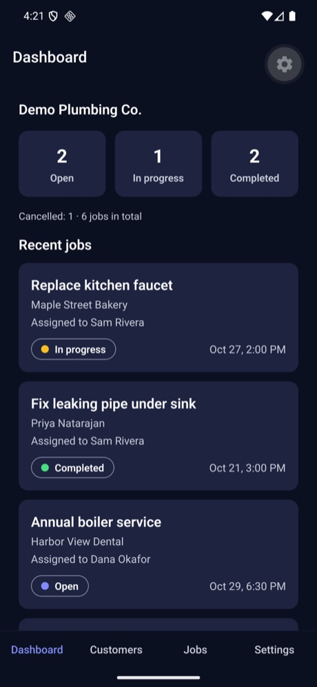
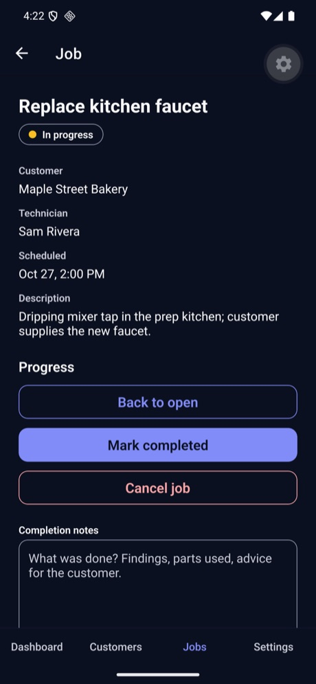
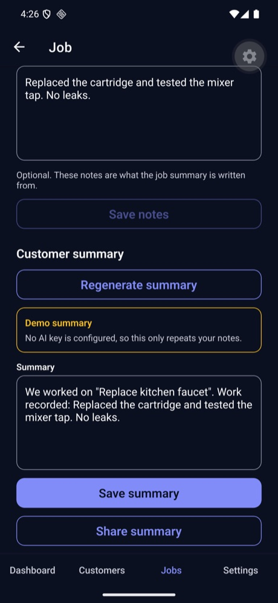
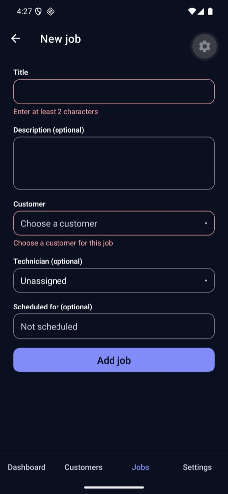
Architecture
01Architecture
One Expo codebase, one Supabase project, one Edge Function. The database is the access-control layer, not the app.
Data flows one way
Screens only render. Hooks hold loading, error and form state. Repositories are the only code that talks to Supabase. Anything crossing a boundary (forms, route parameters, network replies) is validated with Zod, because TypeScript types are erased at runtime.
Security
02Security, and how it is tested
Tenant isolation is enforced in the schema and proven by attacking it, not assumed.
Enforced by the database
- Row-level security on every table, with every default privilege revoked and then granted narrowly.
- Composite foreign keys: a job can only reference a customer or technician of the same business, even with a forged id.
- Column grants: ids, owners and business links cannot be written after creation, so rows cannot be moved between businesses.
- The app holds only the project URL and the publishable key. No secret or service key is ever in the app.
Proven by scripted attacks
npm run test:rls signs up throwaway users on the hosted project and attacks across accounts: reads, edits, deletes, forged foreign keys, signed-out access, column tampering, the AI rate-limit table.
71 of 71 checks pass. Every "rejected" case must fail with a specific database error code, so a typo or network error cannot pass as a security win.
A public repository, kept clean
The full git history (45+ commits) was scanned for secrets: no AI keys, database passwords, tokens or key files. Only .env.example was ever committed. A clean clone with no .env installs in about 9 seconds and passes the whole check.
AI
03The AI feature, kept on a leash
The app sends one job id. Everything else is decided on the server, in an order that is the security design.
Edge Function, step by step
- Identity: only a signed-in user gets in.
- Input: exactly
{ workOrderId }, under 1 KB; anything else is refused. - Ownership: the job is read with the caller's own permissions, so another account's job looks exactly like one that does not exist (identical 404s).
- Notes: empty or oversized notes are refused before any spend.
- Rate limit: 10 per hour and 30 per day per user, claimed atomically in a locked database table the app cannot touch.
- Model call: one attempt, 20-second timeout, no retries. Only the title, description and notes are sent: never customer names, phone numbers or addresses.
What the model may say
Only facts in the notes: no invented parts, prices, warranty terms or certifications. The notes are treated as data, never instructions, and forged delimiter tags are stripped. The owner edits the draft before saving, and errors shown to the user are fixed friendly sentences, never provider text.
Honest status
The summary runs in a clearly labelled demo mode. The live Claude Haiku 5.5 path is written but has never been run against the provider (no key configured), so it is not claimed as working. The rate limit, ownership checks, editing, saving and sharing are real and tested (22 of 22 function checks).
Evidence
04Evidence and gaps
Results from the final close-out run. The full record is in the repository's test plan.
| Check | Result | How |
|---|---|---|
| Lint, typecheck, unit tests | 358 tests, 42 suites pass | Jest + React Native Testing Library; also green in CI and in a clean clone |
| Tenant isolation | 71 of 71 | Scripted attacks against the hosted project |
| AI summary function | 22 of 22 | Against the deployed function, in demo mode |
| Project health | 21 of 21 | expo-doctor |
| Main journey on Android | Verified | Sign-up to a completed job, summary, share, dashboard counts |
| Main journey on iOS simulator | Tested by me | Hands-on during development (this is where several bugs were found); no recorded checklist or screenshots |
| Live AI model | Not verified | No provider key was configured; demo mode only |
Bugs found by using it, not by tests
- A screen opened from another tab had no back arrow; my first fix never worked across tabs, a header button chosen from the stack did.
- On Android the notes box sat behind the keyboard; found while taking the screenshots below, fixed with a small scroll hook.
- At 150% text size a label broke mid-word and the tab names were cut off.
How it was built
In small milestones (M0 to M6) with Claude Code as pair programmer under my review. 46 decisions are logged with the alternatives I rejected, and each milestone ended with a written review and a stop. The README lists what is real, what is mocked and what is not built.
Screenshots
05Screenshots
Android emulator, fictional demo data, dark mode. The summary is in demo mode. These are Android captures; I did not capture the iOS simulator.
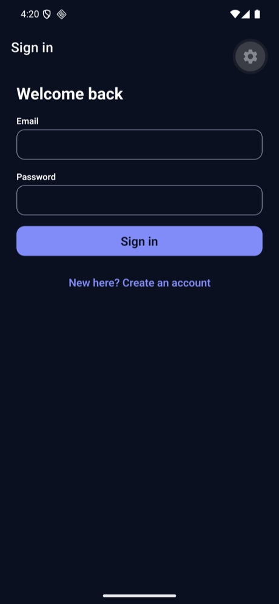
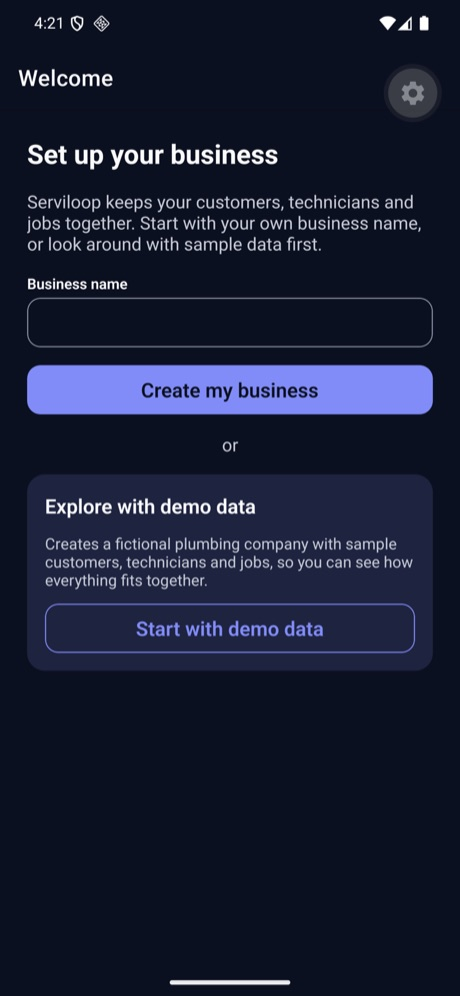
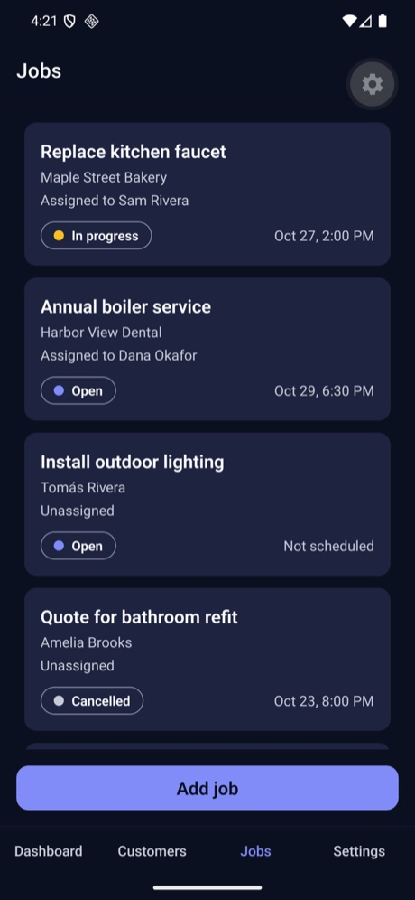
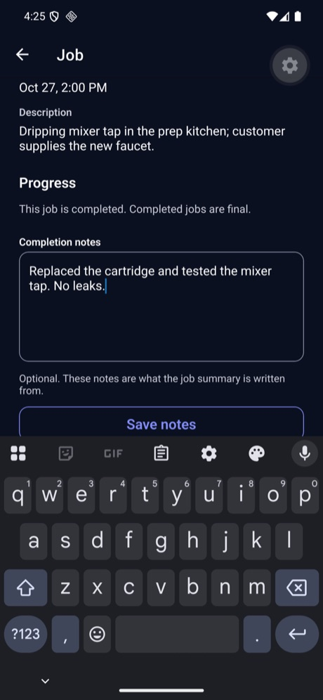
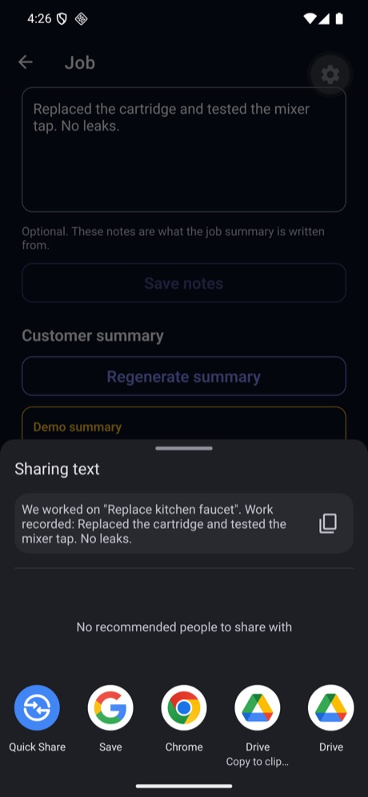
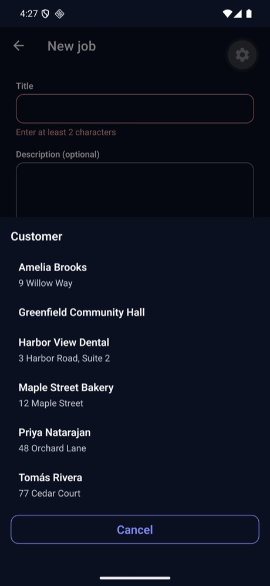
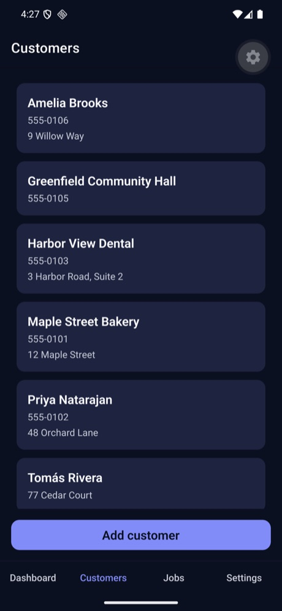
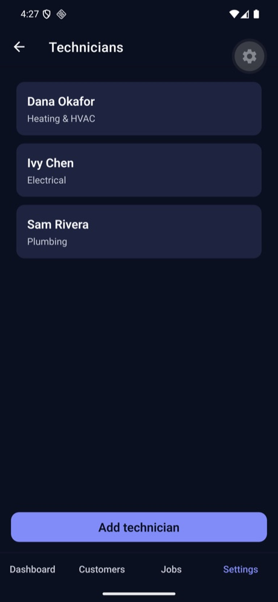
Limits, and what I would do next
- One owner login per business: no technician or customer accounts, payments, invoices, calendar, push notifications, photos, search or offline mode.
- Close the verification gaps: a recorded iOS checklist with screenshots, a live run of the AI path with a spend limit, offline and screen-reader checks on a device.
- Account deletion and a password-reset flow before any store release.